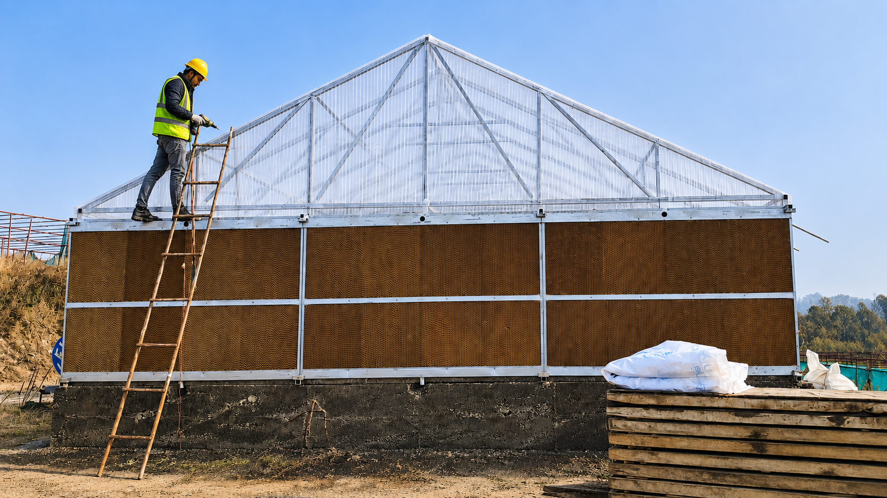
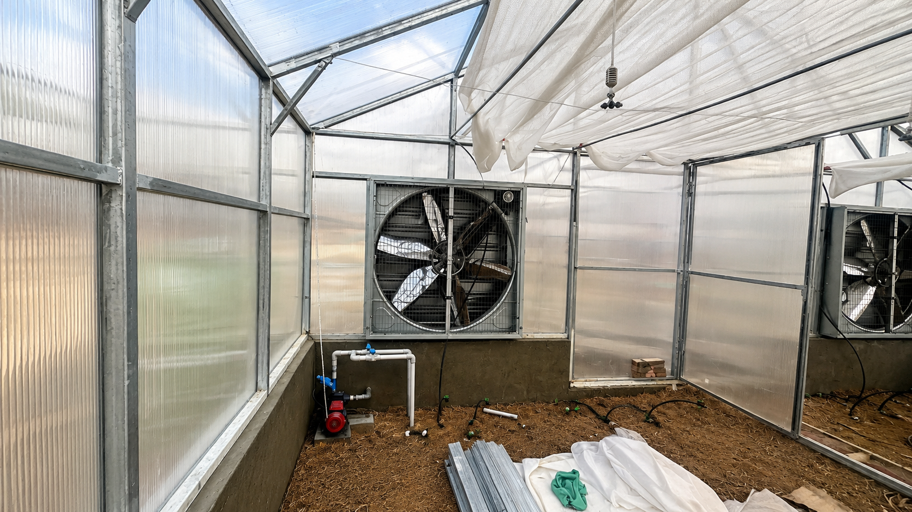
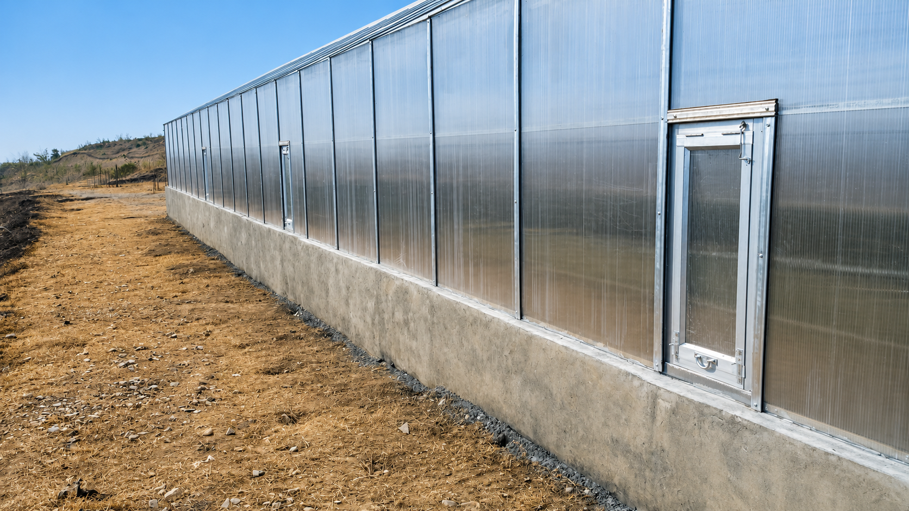
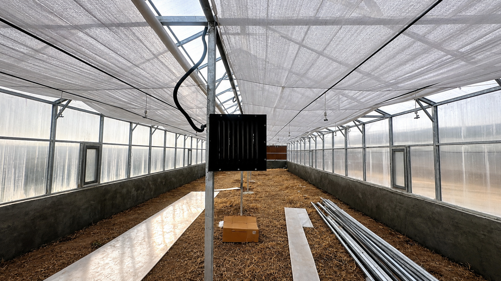
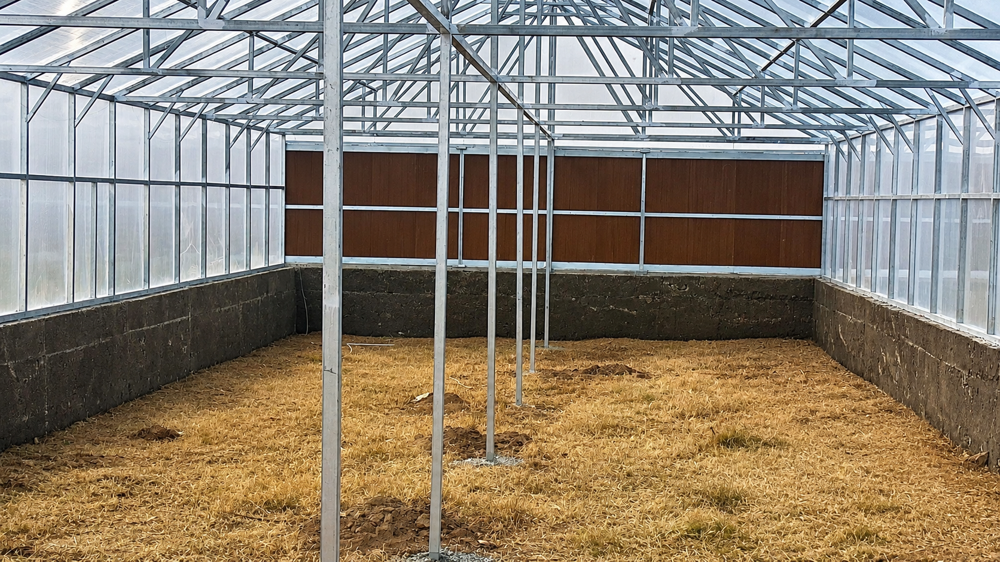
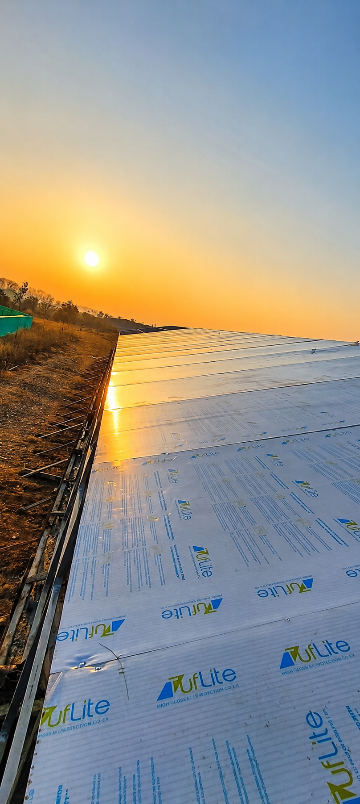
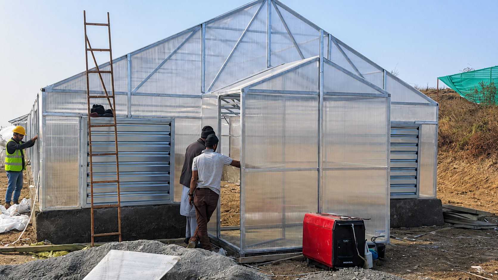
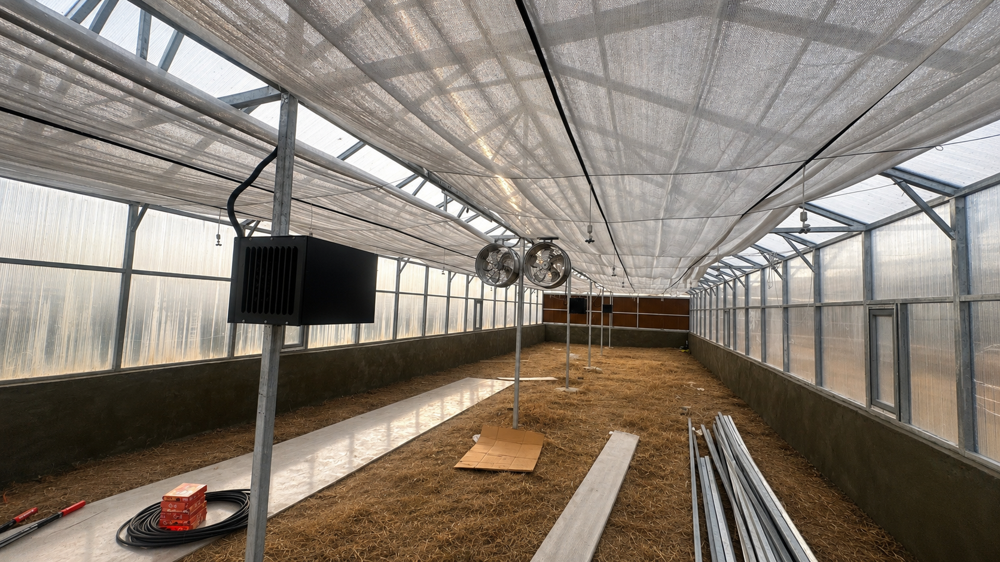
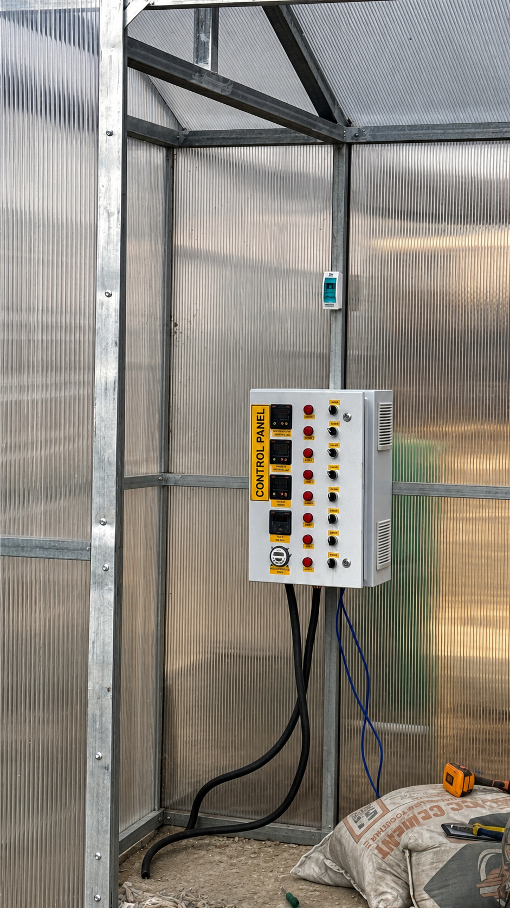

GREENHOUSES & SHADE NET STRUCTURES · PROJECT GALLERY
Growing under
better structure.
High-tech greenhouse solutions and shade net structures designed for resilient, controlled growing environments.

PROJECT OVERVIEW
A stronger frame for better growing.
Our greenhouse and shade net structures combine engineered steel frames, protected covering systems, airflow and irrigation-ready layouts.
The gallery documents internal assemblies, completed side elevations and active installation work for high-tech greenhouse projects.
14Project photographs
02Structure types
100%Site-specific fabrication
GREENHOUSES & SHADE NET · GALLERY







